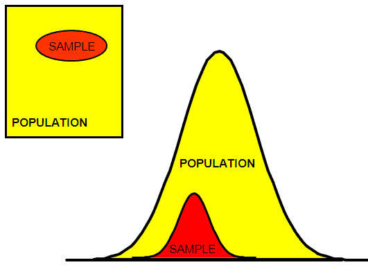

Data and Sampling Distributions

A sampling procedure is used to get from the population distribution to the sampling distribution.
The proliferation of data of varying quality and relevance reinforces the need for sampling as a tool to work efficiently with a variety of data and to minimize bias.
Random Sampling is important when accurate estimates are needed.
Predictive models are typically developed and piloted with samples.
Samples are also used in tests of various sorts.
Sometimes data is generated from a physical process that can be modeled. Eg. Any real-life binomial situation can be modeled effectively by a coin.
Random selection of data can
- reduce bias
- yield higher quality dataset than would result from just using conveniently available data.
The bootstrap is a "one size fits all" method to determine possible error in sample estimates.
Test your understanding
- Why is sampling still important in the age of big data?
- Give an example of data generated from a physical process that can be modeled.
- What are the benefits of random selection?
Read Next: Random Sampling and Sample Bias